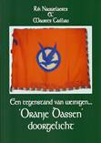
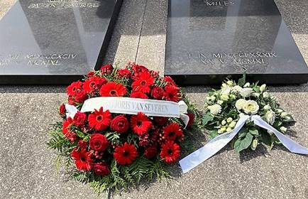

Wie zijn ledenbijdrage
van minimum 29 € nog niet vereffende kan dit alsnog doen en dit
het liefst voor einde juni. Dit laat ons toe de overgang van
Studiecentrum JvS naar
JvS Instituut in
goede banen te leiden.
Voor een goed begrip: het *-symbool op uw adresetiket
bevestigt dat u de ledenbijdrage - tevens abonnement op het
Jaarboek en de Nieuwsbrief – wel al betaalde. Ontbreekt
dit *-symbool, dan wordt het
hoogtijd daaraan te verhelpen en alsnog uw bijdrage te
vereffenen. Wie méér dan het minimumbedrag van 29 € overschrijft
boeken we traditiegetrouw als erelid.
Bijgave bij het Jaarboek 2022
Bij het Joris van Severen Jaarboek 2022 mogen
onze ereleden (zij die spontaan hun jaarbijdrage verhoogden tot
35 € of meer) een toegift verwachten, nl. het boek Oranje
Dassen doorgelicht (144 p.), zijnde de geschiedenis van
het Algemeen Diets Jeugdverbond. Een jeugdbeweging die Joris van
Severen hoog in het vaandel droeg en door velen als ’n
neo-Dinaso-organisatie werd geïnterpreteerd.
Oude Jaarboeken
Joris van Severen
Mede met het oog op de nakende fusie tussen het Studiecentrum
Joris van Severen en de Stichting Joris van Severen
tot het Joris van Severen Instituut (zie ook verderop in
deze Nieuwsbrief) werd besloten het aantal archiefexemplaren van
de al verschenen jaarboeken af te bouwen.
Van alle jaarboeken (met uitzondering van het Oorlogsdagboek
en de Fotobiografie) zijn nog exemplaren voorhanden.
Daarmee bieden we onze leden een enige gelegenheid op het
aanvullen van de hiaten in hun jaarboekenreeks. De gunstprijs
per jaarboek bedraagt 5 €, te verhogen met de verzendkosten,
zijnde 5,80 € per 2 exemplaren.
Interesse? Deel ons dan de je ontbrekende jaargangen
mee. Voor zover voorradig leggen we die dan voor jou opzij op
basis van “Wie eerst komt, eerst maalt”. Dit aanbod eindigt
einde juni 2022, bij de fusie van het Studiecentrum Joris van
Severen met de Stichting Joris van Severen.
INHOUD
Jaarboek Joris van Severen 26 (2022)
Met deze aflevering zijn we aan het 26e Jaarboek Joris van Severen
toe. We brengen andermaal een ruime verscheidenheid aan
bijdragen die op een of andere wijze inzoomen op de ondertitel
van deze reeks: Joris van Severen, zijn persoon, zijn
ideeën, zijn invloed en zijn werk.
Vooreerst komt Luc
Pauwels aan het woord die, na zijn recente grote biografie van
Joris van Severen, als het ware de lijn doortrekt met z’n essay
Joris van Severen, een begin…
Daarop aansluitend
brengt Romain Vanlandschoot de resterende hoofdstukken van zijn
diepgravend essay De laatste weg
alleen, Joris van Severen 8 mei 1927 – 29 mei 1929, In
het afsluitende luik van dit essay - waarvan het eerste deel
werd opgenomen in het Jaarboek Joris van Severen 25
(2021) - komen respectievelijk aan bod: ‘’Een vernietigende,
kwetsende en arrogante rede’, ‘Wil Joris van Severen wel een
Directorium?’, ‘Roosendaal helemaal niet rooskleurig’, ‘De
meerderheid van het KVNV is met mij’ en ‘De schaduw van August
Borms’.
In Gerard van der
Horst en het Verdinaso in Nederland brengt Ruud Bruijns
diens rol en de verdiensten in herinnering bij het ontstaan en
de uitbouw van de Noord-Nederlandse tak van Van Severens
beweging. “Ik weet
zeer goed dat gij de eerste zijt geweest…”, loofde Van Severen hem. Hij
was niet slechts de eerste, doch ook de laatste getrouwe, zo
blijkt.
Toen
de Nederlandse regering in 1934 het ambtenarenverbod inzake
lidmaatschap van Musserts NSB afkondigde publiceerden 19
hervormde predikanten een pamflet tegen deze maatregel. Hun
oproep werd naderhand door nog eens 100 predikanten
onderschreven. Hun grote bezwaar werd hen ingegeven door hun
antibolsjewisme. Onder hen waren er een vijftal abonnees van Hier
Dinaso!, het wekelijkse tijdschrift van het Verdinaso.
Geen van die vijf was NSB’er en evenmin hebben ze tijdens de
Tweede Wereldoorlog gecollaboreerd met de Duitse bezetter, wel
integendeel: sommigen onder hen stonden in het daadwerkelijke
verzet. Daarover vernemen we meer in de bijdrage van Henk
Tijssen over De ‘Hier Dinaso!’-lezers onder de hervormde
predikanten in de noordelijke Nederlanden.
Niet
onterechte wordt wel eens beweerd dat in de jaarboekenreeks over
Joris van Severen bij voorkeur aandacht besteedt wordt aan Louis
Gueuning en Emiel Thiers, i.c. dan wat betreft hun rol bij de
teloorgang van het Verdinaso aanvang het jaar 1941. In de
bijdrage van de hand van Maurits Cailliau over Het andere
geluid: over de rol van Jef François in 1940-1941 wordt
gefocust op het aandeel van Jef François en Pol le Roy in deze
cruciale maanden.
Na het
einde van de Tweede Wereldoorlog zijn tal van pogingen
ondernomen om de ideeën die het Verdinaso nastreefde – de
eenheid van de Nederlanden en de structurering van het
maatschappelijk bestel op basis van het solidarisme – opnieuw te
actualiseren. Over één van deze pogingen brengt prof. em. Hans
Nelis, met z’n essay Het
gedachtegoed van een neo-Dinaso beweging: De Dietse
Solidaristische Beweging (DSB), als destijds
geëngageerd militant van de DSB, verslag uit.
Afsluitend komt in deze
editie ook Joris van Severen zelf aan het woord middels zijn Dagboeknotities
over de periode aanvang januari tot einde april 1921. Daarin
komt, naast zijn zorgen om ‘Maine’, ook z’n weerzin tegen alle
vormen van geweld manifest op de voorgrond. Daarnaast ook een
handgeschreven notitie van zijn hand.
Luc Delafortrie’s
gedicht Denkend aan het Verdinaso sluit het jaarboek af.
Dit 26e Jaarboek
Joris van Severen is de laatste editie uitgegeven door het
Studiecentrum Joris van Severen. Doch niet het laatste in de
reeks. Als reeds in de Nieuwsbrief Joris van Severen
aangekondigd fuseren het ‘Studiecentrum Joris van Severen’ en de
‘Stichting Joris van Severen’ in de loop van dit jaar onder de
naam Joris van Severen Instituut, dat vanaf 2023 de
nieuwe uitgever van het Jaarboek Joris van Severen
wordt.
______________
N.a.v. Jaarboek
Joris van Severen 26 (2022), 208 pp, ill, ISBN
9789076057262, ledenprijs 29 €, boekhandelsprijs 35 €
Aanvulling vanuit
onze lezerskring
Een
tweetal kleine opmerkingen vanwege artikel Solidaristische
Beweging in laatste jaarboek. Op bladzijde 130 wordt gesproken
over Bernard Postma, ik heb zelf het stuk op wikipedia
geschreven wat de auteur deels als bron gebruikt. Het begrip
solidaristisch ideoloog komt dus van mij, dat heb ik bedacht
omdat Postma het programma van de Nederlandse Volks-Unie heeft
geschreven, naast een hoop andere artikelen, die naar mijn
mening allemaal het solidarisme ademen.
De
schuilnaam Berend de Vries die wordt genoemd, daarvan weet ik
zeker dat deze van Postma zelf was, de secretaris penningmeester
die wordt genoemd was vermoedelijk de Dordtse advocaat Willem
Beernink. (Sjors Remerswaal, Zoetermeer)
82 JAAR later
Zaterdag 21 mei 2022: Jaarmis te
Brugge & herdenking aan het Bourgoensche Cruyce
Homilie door de E.H. Jan Tilleman
in de Blindekenskapel
Talrijke
jongeren ontvangen deze dagen het vormsel. Hiermee geven zij te
kennen dat zij christen willen worden. Dit gebeurt in een
drietal stappen. Eerst en vooral belijden zij dat ze geloven in
Jezus Christus.
Ze
belijden dat ze in woord en daad de taal van Christus willen
spreken in hun dagelijks leven, in de omgang met hun medemensen,
in hun zorg voor de aarde. Wie Christus volgt, schept toekomst
voor mens en wereld. Hij is bron van hoop voor elke medemens,
wereldwijd, en in de eerste plaats voor diegenen die honger en
dorst lijden, de vluchtelingen en de daklozen, de zieken en de
verdrukten. ln een tweede stap belijden zij hun geloof in God.
Wie gelooft in Jezus Christus, zich aan Hem toevertrouwt en zijn
'taal' wil spreken, gelooft ook in de God van Jezus Christus.
M.a.w., hij kan geloven in een God die herkenbaar wordt en zich
laat kennen, die openbaar wordt en zich openbaart in de mens
Jezus van Nazareth, en ook in elke mens in wie we iets van Jezus
van Nazareth herkennen. Als beeld, symbool, sacrament geeft
Jezus God gestalte en verwijst naar Hem die groter is dan zijn
hart. Want de Vader is groter dan ik.
In een
derde stap worden mensen christengelovigen in solidariteit met
elkaar, als ze in elkaar geloven, als ze elkaars woord en
wederwoord, woord en antwoord worden. Daarbij horen vergeving en
verzoening. In het verbond dat mensen belangeloos en universeel
tot stand brengen, realiseren ze Gods geloof in elke mens. Dat
blijkt uit de verhalen over Jezus Christus. De God van Jezus
Christus blijft onvoorwaardelijk 'Ik-zal-er-zijn-voor-jullie'.
Door het volgen van Jezus Christus kan ons levensverhaal nu Gods
verhaal worden. Mensen brengen dan tot expressie dat ze symbool
van God zijn. Ze verhalen God.
Vanuit
hun geloof worden christenen 'heilig', helend (Genezen en
heel-maken). Wie Jezus volgt en zoals Hij belangeloos solidair
wordt met iedere medemens, heelt en geneest anderen, wordt zelf
genezen en geheeld.
Centraal
staat hierbij de vrede: Mijn vrede laat Ik jullie na, mijn
eigenvrede geef lk jullie, een andere dan de wereld te bieden
heeft.
Jezus
wordt immers in het evangelie getekend als iemand die luistert
en probeert zijn toehoorders mee te nemen in zijn overtuiging,
zonder hen te dwingen. Jezus liefhebben en zijn woord ter harte
nemen, is houden van elke medemens, wie dan ook. Het gaat
hierbij om een vrede die gefundeerd is op onderlinge
verbondenheid, een vrede van eenheid in verscheidenheid, met
respect voor ieders ritme, voor ieders zoeken en tasten, elkaar
aanvullend, elkaar scheppend. In het verwezenlijken van die
vrede worden we openbaring van de levende Christus, van
God-met-ons, van ons-met-God. ln die vrede ervaren we Jezus
Christus, zijn God en de pleitbezorger, de heilige Geest.
Joris
van Severen gebruikt graag het woord 'solidarisme'. De
pauselijke encyclieken Rerum Novarum (1891) en Quadragesimo
Anno (1931) brengen immers het verhaal van het katholieke
solidarisme. In het solidarisme ziet Joris van Severen de
oorspronkelijke christelijke sociale leer. Het is het
maatschappelijk systeem, dat de solidariteit van elke
gemeenschap met haar leden en van de leden met hun gemeenschap
als grondbeginsel van de menselijke samenleving stelt. Joris van
Severen legt er steeds de nadruk op dat het begrip solidarisme
niets anders is dan het christelijk begrip van een gemeenschap.
Toespraak door Stefaan Coudenys
namens het Abbeville-comité aan het Bourgoesche Cruyce
82
jaar na de gebeurtenissen van mei 1940 blijven we dit monument
van herinnering opzoeken. Het werd ontworpen door wijlen mevr.
Gaby Warris, die het bloedbad van Abbeville meemaakte. Het dient
geen politiek doel; het streeft geen wraak na; het wekt geen
woede. Het is een gedenkplaat van liefde, die de herinnering
levend wil houden aan enkele mensen die gesmoord werden in de
onmenselijkheid die oorlog heet.
Het
publiek dat zich rond dit monument verzamelt, wordt ouder. Met
het overlijden van Gaby Warris in 2013 (12 september) verdween
de laatste getuige van het bloedbad. Marc Devriese was jarenlang
de zachtmoedige bezieler van deze herdenking; hij overleed in
2015 (december). Tom Allewaert zorgde voor de locatie van deze
gedenksteen, hij overleed in 2019 (27 augustus). Guido Van In
zorgde als senator voor het eerherstel van de slachtoffers van
Abbeville; hij overleed in 2020 (24 oktober).
Toch
blijft het Abbevillecomité overtuigd van het belang van deze
jaarlijkse herinnering. We leven in een wereld waar het verleden
niets meer is dan een voetnoot bij het heden. Meer nog, het
verleden wordt zorgvuldig herschreven om de politiek van nu te
dienen. Geschiedenis wordt vakkundig met een gekleurde bril
hertaald, de verhalen nauwkeurig ingedeeld in hedendaagse
allegorieën van goed en kwaad.
Dit
drama van Abbeville leert ons voor altijd dat een mens geen
prototype is dat zomaar ingezet kan worden als politieke
pasmunt. Om het met een woord van wijlen historicus Eric Defoort
te zeggen, de wereld wordt in zijn diepmenselijkheid getekend
door sfumato, De slachtoffers van het bloedbad van 20
mei 1940 zijn niet voor altijd goed omdat ze het slachtoffer
werden van militaire terreur, en evenmin zijn ze slecht omdat ze
door de juiste militairen doodgeschoten werden. Het waren mensen
zoals u en ik, die zo goed en kwaad het kon hun leven leidden en
vermalen werden door de storm die oorlog is.
Natuurlijk
werden fouten gemaakt, door de Brugse overheid, de Belgische
staatsveiligheid, het Franse militaire apparaat. Het is des
mensen om fouten te maken, en volwassen om met die fouten in het
reine te komen: de stad Brugge laat zich elk jaar op deze
plechtigheid vertegenwoordigen en bewijst daarmee het voornemen
om uit de fouten van het verleden lessen te trekken. De
Belgische overheid nam haar verantwoordelijkheid eind jaren ’70,
toen ze de stoffelijke resten van de slachtoffers liet
overbrengen naar het militaire kerkhof van De Panne en hen
daarmee expliciet als oorlogsslachtoffers erkende. En ook het
Franse militaire apparaat besefte bij monde van luitenant
Leclabart dat de standrechtelijke executies niets meer waren dan
een wetteloze moordpartij.
In de
chaos van de oorlog is het drama van Abbeville een tragedie,
waarin iedereen als Oedipus zijn best doet om zijn eigen rol te
spelen, maar stapsgewijs terecht komt in een maalstroom van
onmenselijkheid, waar een mensenleven niets meer waard blijkt en
elk moreel besef gesmoord wordt in de passie van de haat.
Deze
herdenking hemelt niet de slachtoffers op. Ze veroordeelt niet
de daders. Ze vraagt begrip en nodigt uit tot contemplatie over
de menselijke conditie. Deze herdenking veroordeelt radicaal de
oorlog, niet uit een naïef of idealistisch pacifisme, maar in
het volle besef dat oorlog een broedplaats is waar de duivel
zijn discipelen vindt. Waar oorlog is, gebeuren Abbevilles.
Ziehier
het belang van Eeuwige Gedachtenis.
82 JAAR later
Zondag
22 mei 2022: aan het graf te Abbeville
Toespraak door Stefaan Coudenys te
Abbeville namens het Abbevillecomité
Dit is
een praalgraf voor een omstreden man, zijn trouwe secretaris en
hier vlakbij ook de laatste rustplaats van zijn grote liefde
Rachel Baes.
Tot op
vandaag zorgt van Severen voor beroering: de man moet een immens
charisma hebben gehad om na zijn ontijdig sterven nog zijn
schaduw ver vooruit te werpen; om zo’n verscheiden mensen als
Jan Ryckoort en Rachel Baes tot in de dood aan zich te binden;
om met Maria Ceuterick en Louis Caestecker een lot te delen dat
niemand toebedeeld mocht krijgen.
 De
bloemstukken op het dubbelgraf te Abbeville op 22 mei 2020
Dit
praalgraf is gebouwd door acolieten die hun held zelfs in de
dood het schild ophesen en daarmee het onrecht van een
wederrechtelijke moord vervloekten. Het dreigde daarmee een
strijdtoneel te worden van al wie enkel denkt aan eigen gelijk.
Maar de tijd passeert ook hier: geen grote menigte komt nog dit
graf bezoeken, en als het al omstreden is, niet voor deze
slinkende groep mensen die zich de gebeurtenissen van al die
jaren terug nog heugt.
Hier
is geen ruimte om de demonen van de jaren ’30 op te roepen; geen
plaats voor verhitte discussies over of bewijzen van de eigen
zekerheid. Hier op deze uiterste grens der Nederlanden is dit
een monument van weerstand tegen al wie eenzijdig de
geschiedenis wil lezen en geen oog kan hebben voor de
gelaagdheid die elk mensenleven vormt.
Die
vele facetten van eenentwintig mensenlevens, van wie vier
Brugse, werden hier in bloed gesmoord. Het past elk jaar hier
schroomvol terug te komen en stilletjes te mijmeren over wat
geweest is; te mediteren over hoe haat het winnen kon van vrede,
hoe oorlog aanzet gaf tot dit inferno.
Dit is
een pelgrimstocht naar ons eigen hart, waarbij we bidden moeten
niet enkel dat ons dit lot bespaard mag blijven, maar vooral dat
we nooit in de verleiding komen om zelf een beul te zijn.
Toespraak door Luc Seynaeve
voorzitter Stichting Joris van Severen te Abbeville
Na
twee jaar Corona tekenen we opnieuw present aan het graf van Jan
Ryckoort en Joris Van Severen. Dit korte tijd voor de
parlementsverkiezingen in Frankrijk én dit ook in oorlogstijd in
Oekraïne met Rusland.
Zowel
Jan Ryckoort als Joris van Severen waren ook twee personen die
droomden van vrede, zo ook wij. Met het barbaarse van de oorlog
werden ze rechtstreeks geconfronteerd. “Vermoord” ten onrechte
samen met andere lotgenoten hier in Abbeville op 20 mei 1940.
Groepsfoto van de aanwezigen te Abbeville op 22 mei
2022
Het
herdenken gaat door. 2022 is een bijzonder jaar omtrent Joris
van Severen. De twee bestaande vzw’s werden omgebouwd tot één
vzw: het Joris van Severen Instituut. Dit was
noodzakelijk. Een éénvoudiger werkstructuur, het bundelen van de
krachten omtrent herdenken, studie en communicatie aangaande
Joris van Severen en Jan Ryckoort.
De
maatschappelijke doelstelling van het Joris van Severen
Instituut is: de persoon en het werk van Joris van Severen
en zijn beweging het Verdinaso te bestuderen en te communiceren
aan derden, los van enig politiek doel. Dit staat genoteerd in
Hoofdstuk 1 van de statuten art. 3.
Het
studiewerk omtrent zijn persoon en zijn werk is steeds bezig. De
jaarboeken zijn exemplarisch. Het herdenken gaat steeds door.
Een jaarlijkse herdenkings-mis te Brugge, een herdenking
uitgaande van het Brugse Abbeville Comité en onze aanwezigheid
elk jaar in Abbeville. Wat wellicht ‘bijzonder” en “nuttig”
wordt is, vooral wat de toekomst betreft, het luik:
“communicatie”.
De
persoon Joris van Severen gaat steeds verder in de tijd.
Kennisoverdracht en historische duiding zal dus behoren tot de
prioriteiten. Dit zijn we hem en zijn beweging het Verdinaso
verschuldigd. Kernpunten als de Nederlanden, het solidarisme, de
geestelijke kracht uitgaande van het “Plus est en vous”, de
Vlaamse beweging in een breder perspectief moeten we verder
‘centraal’ stellen in het politieke veld en de socioeconomische
benadering van ons maatschappelijk bestel. Aldus kent het pas
opgerichte Joris van Severen Instituut een serieuze
opdracht én uitdaging.
Ik
dank U voor uw aanwezigheid en eindig met de woorden die Van
Severen schreef op 11 maart 1939:
“Tegenover
het werkwoord ‘trekken’ stelt het Verdinaso het werkwoord
‘dienen’.Eén enkele vervoeging
van dat werkwoord in de tegenwoordige tijd: ik dien, wij
dienen.”
Op weg naar een fusie: het
Joris van Severen Instituut
Naar
aanleiding van de Algemene Vergadering 2021 van het Studiecentrum
Joris van Severen – vzw werd gepleit voor een samengaan
met de Stichting Joris van Severen vzw, die al sinds
jaren instaat voor het organiseren van de
herdenkingsplechtigheden te Brugge en te Abbeville en het
onderhoud van het grafmonument aldaar.
Tijdens
de voorbije maanden werden daartoe meerdere gesprekken gevoerd
teneinde tot een fusieakkoord tussen beide vzw’s te komen dat in
de loop van 2022 in werking zal treden onder de naam Joris
van Severen Instituut - vzw.
Binnen
het Joris van Severen Instituut werden
ondertussen een drietal werkgroepen gevormd, waaronder ook de
‘Werkgroep publicaties’, die voorteen zal instaan voor de
redactie en voortzetting van de jaarboekenreeks en de
Nieuwsbrieven.
Voor
het lidmaatschap van beide vzw’s zal dit geen gevolgen hebben:
met het ingaan van de fusie wordt het lidmaatschap automatisch
omgezet tot het lidmaatschap van het Joris van Severen
Instituut.
Het Studiecentrum
Joris van Severen verzorgt nog de uitgave en
verspreiding van het 26e Jaarboek Joris van Severen 2022 en de Nieuwsbrieven
Joris van Severen, nummers 3/2022. Het nummer 4/2022
wordt een uitgave van het Joris van Severen Instituut,
gevestigd in Izegem.
Nadere
praktische gegevens met betrekking hiermee volgen in de volgende
Nieuwsbrief Joris van Severen.
Programma
Cyriel Verschaeve Colloquium
De
vzw Kapelaan Verschaeve organiseert op zaterdag 2 juli 2022 een tentoonstelling
en een colloquium, onder de titel
‘Cyriel Verschaeve als kunstenaar’
Met
dit colloquium wil onze vzw, in samenwerking met het ADVN en
de gemeente Alveringem, op basis van recent
onderzoeksmateriaal het literaire werk en het beeldhouwwerk
van Cyriel Verschaeve nader belichten.
11u: Welkomstwoord door Andreas
Cavyn, Voorzitter vzw Kapelaan Verschaeve, in OC De Kwelle,
Sint-Rijkersstraat 20, Alveringem
11u10:Referaat 1: Het marmer en het slijk. Over
de radicale verbeelding van Cyriel Verschaeve (1919-1936),door Aragorn Fuhrmann,
Wetenschappelijk onderzoeker ADVN
12u30: Broodjeslunch in Gemeentehuis
‘Hof van Wyckhuize’
13u - 14u: Mogelijkheid tot bezoek aan de
Kapelanij Verschaeve en/of bezoek aan de tentoonstelling in de
kerk
14u15: Start namiddagprogramma:
Referaat 2: Beelden tussen werkelijkheid en
ideaa,ldoor Paul Verbraeken,
Kunsthistoricus/kunstcriticus. Dit referaat gaat door in de
kerk van Alveringem
Referaat 3: Die Wende in
der Kunst. Cyriel Verschaeve voor het
Katholischer Akademiker Verband. Stuttgart, 4 augustus 1932,door Romain Vanlandschoot,
Historicus van de Vlaamse Beweging
Muzikaal
intermezzo
Referaat 4: Jezus, ‘de sterke Held, de hoge Wijze,
vaderlijke Trooster’ als levende werkelijkheid in
Verschaeves Jezusboe,kdoor
Pieter Bauwens, Licentiaat Godsdienstwetenschappen
Muzikaal
intermezzo
Algemene besluiten van het colloquium door Prof.
Dr. Em. Frans-Jos Verdoodt
Slotwoord door Gerard Liefhooghe,
Burgemeester van Alveringem
18u15:
Receptie
Inschrijving
via antwoordstrook (hieronder) vóór 20 juni 2022 aan vzw
Kapelaan Verschaeve p.a. O.L.
Vrouwstraat 11, 8600 Diksmuide of via mail aan koen.bultinck@skynet.be
Antwoordstrook
OHr./Mevr.
neemt deel met perso(o)n(en).
Straat
+ nr.: Postcode + woonplaats:
O
Neemt deel aan het colloquium en de tentoonstelling en de lunch
aan € 25,00 / persoon
0
Bestelt exemplaren van de catalogus in voorverkoop en schrijft x
€ 15,00 over (nadien € 20,00) Graag bevestigen via
overschrijving vóór 20 juni 2022 naar BE82 4766 1017 6168 van
vzw Kapelaan Verschaeve, O.L. Vrouwstraat 11, 8600 Diksmuide
(Handtekening deelnemer)
Wat ik
hier schrijf is geen brief, het is mijn levensboek,
beknopt
Fons Igné
Ten geleide.
Van Fons Igné lazen we in een voorafgaande
Nieuwsbrief al zijn belevenissen in het kader van de beruchte
Antwerpse ‘Zaalslag’.
In onderstaand stuk verhaalt hij over de evolutie
die Joris van Severen binnen de eigen Dinaso-rangen
doorvoerde. Een evolutie die het verbond ‘salonfähigkeit’
verleende en het zijn scherpe kanten liet verdoezelen.
Een evolutie
die de geesten scheidde en in grote mate als het ware in
stilte verliep. Aanvankelijk teleurgesteld over die evolutiezag hij later in dat
de lijn die Joris van Severen uitstippelde de enige vruchtbare
was – zo blijkt ook voor hem. (Maurits Cailliau)
In mei
1934 moest ik mijn legerdienst vervullen. De tweede dag, wist ik
al hoe laat het was. Men kende mij reeds. Enkele sergeanten
kwamen naar mij' vragen. Zij vroegen van waar ik was en trokken
zich terug. Ik wist genoeg. Onder die sergeanten was er ene die
mij, tijdens een nachtmars, alleen zijnde begroette met ‘Heil
Dinaso!’ ik reageerde niet, ik betrouwde het niet, en nochtans
hij was Dinaso, namelijk de betreurde Karel Lagast die later
naar het Oostfront trok en na de bevrijding door de Belgische
staat door het vuurpeloton werd vermoord.
In
mijn compagnie bevond zich nog een Dinaso, een militiaan zelfs,
een korporaal der Schoolcompagnie 1933, Verreycken genaamd uit
Borsbeek. Deze heeft me nooit een woord, zelfs geen blik gegund
alsof ik in zijn ogen een rotte vis was. Na dat weten nam ik mij
voor om alle moeilijkheden tijdens mijn 8 maanden legerdienst te
vermijden, door zo weinig mogelijk met het Dinaso in contact te
treden.
In
januari 1935 zwaaide ik af. Maar na de landdag van Sint-Kruis
Brugge, alwaar ik ook naartoe was gegaan, kon ik mij niet meer
houden en meldde mij terug aan. Maar het werd mij een
teleurstelling.
Hetgeen
nu langzaam evolueerde, zonder er veel van gewaar te worden,
werd me plots duidelijk na een jaar afwezigheid. Het was voor
mij hetzelfde Dinaso niet meer. Mijn voorgevoel van Roeselare
was bewaarheid. Vele van onze vroegere vrienden waren verdwenen,
gewild of gedwongen. Jef Missoorten was weg, Tuur Nollet, Oscar
Van Keirsbilck, Bert Meuris, ingenieur Jef de Langhe en nog vele
anderen. Nieuwe personages defileerden tussen ons en wat voor
mij het minste ging was dat er zich onder hen mensen bevonden
die, toen wij zelfs met het gevaar van ons leven de doorbraak
forceerden, veilig achter hoek en kant gingen staan of zich in
deurnissen verscholen. Wij zorgden voor het straatrecht, wij
bezorgden het Dinaso burgerrecht. Maar nu alle gevaar geweken
was, traden zij tevoorschijn, baanden zich een weg met
ellebogenwerk naar de top. De eerste regimeprofiteurs waren ten
tonele verschenen. Kwam daarbij dat de oude kameraadschap
verdwenen was en dat er een zekere hooghartige afstand was
geschapen tussen leiding en soldaat. De vendelleider gunde zijn
manschappen zelfs geen blik maar stapte hen het hoofd in de nek
voorbij. Nee Fons, dat ging niet meer en het is dat, dat mij aan
Jef Morael deed zeggen dat ik niet vocht voor een bourgeoisie -
en ik verliet het Dinaso, enkele weken later gevolgd door mijn
vriend, de vendelleider van Mechelen, Emiel Van den Brande die,
toen hij me daarna kwam bezoeken bekende: "Neen Fons, het gaat
mij ook niet meer.”
Wij
hebben het Dinaso verlaten, maar verraden hebben wij het nooit,
het heeft ons een lijn gegeven die bepalend was voor ons verder
leven. Later, veel later heb ik de handelswijze van Joris van
Severen beter leren begrijpen. Dikwijls herinner ik mij nog de
woorden die hij zich tegen Jef Missoorten liet ontvallen, die
donkere avond toen wij van Antwerpen naar de Oude God
opmarcheerden alwaar hij een spreekbeurt zou houden. Hij stapte
naast Jef, juist naast de rij waarin ik mij bevond. Jefke
Janssens naast mij is de enige die dat kon bevestigen; jammer
genoeg heb ik vernomen dat hij rond Charkov zou gevallen zijn.
Van
Severen zei letterlijk: "Met tweehonderd van zulke mannen doe ik
een staatsgreep.” In onze jeugdige overmoed begrepen wij de
draagwijdte van die woorden niet. Later zou me dat veel
duidelijker worden, alsook het waarom zijner marsrichtingen van
1934 en 1936. Die woorden betekende het vonnis van Jef
Missoorten en nog veler der onzen. Wij moesten verdwijnen.
Zijn
eerste daad: 1934. Zijn eerste marsrichting, de uitbreiding van
zijn werkterrein: de inschakeling van gans België in zijn
ideeën. Datgene dat hij, tegenover de andere
Vlaams-nationalisten, als het "Bourgondisch Systeem”
bestempelde, en dat ook aanleiding was dat velen van ons zich
terugtrokken. Anderen zijn gebleven.
In
1936 vond Joris van Severen de tijd rijp om zijn tweede
marsrichting te bepalen. Een richting die zelfs bij velen die
gebleven waren ook niet zo goed aankwam. Maar de tijd heeft zijn
werk verricht. Ik herinner mij nog de woorden die Karel Morael,
in aanwezigheid van Jan Buyens, tijdens de overwinningstocht van
de Volksunie: ”Fons, het was hard te moet marcheren achter de
Belgische vlag." Dit alles deed mij de woorden die hij eens
tegen Jef Missoorten uitte beter begrijpen. Hoe kon Van Severen
met tweehonderd man een staatsgreep uitvoeren? Een staatsgreep!
Een “binnenhuisrevolutie”. Maar daarvoor moest men eerst in het
huis zijn, daarvoor moest hij' kunnen binnendringen in de
middens van de Belgische heersers. Daarom moest het extreem
Vlaams-nationalisme totaal uit zijn rangen verdwijnen, omdat die
steeds een doorn in de ogen der Belgicisten bleven. Zolang deze
in het Dinaso kamp bleven kon het indringen in hun midden niet
lukken.
Nooit
of nooit kan men mij van de gedachte afbrengen dat enkelen deze
houding van Van Severen vreesden. Zij', en zij alleen, en op hun
bevel hebben ze hem te Abbeville, door zogezegde dronken Franse
soldaten laten vermoorden. Hij was voor hen te gevaarlijk. De
Leider dood, de beweging besluiteloos.
En
nochtans niemand kan zeggen welk besluit Joris van Severen in
deze oorlog zou genomen, hebben. Voor, tegen of neutraal? Onder
hen waren ook Engelsgezinden of neutralen, zoals de militianen
die ik tijdens de oorlog te Mechelen ontmoette en die zeiden:
"Wij houden ons onzijdig, men gaat ons nog nodig hebben."
Kleinzielig want over dat nodig hebben heb ik niets gemerkt.
Een
droom werd vernietigd door Adolf Hitler, die overhaastig zijn
droom voor zijn eigen volk nog wilde verwezenlijkt zien.
Joris
van Severen! Wie was hij? Door
jarenlange studie op filosofisch gebied op mijn medemensen in
mijn omgeving en ook volgens de gegevens van een Nederlands
professor kom ik tot volgend besluit: Joris van Severen was geen
individualist, hij was een maatschappelijk mens. Hij' was de
meestergast in dienst van zijn volk, onbaatzuchtig. Hij' was
geen Adolf Hitler en ook geen Mussolini. Dat waren volksmenners,
ware leiders. Deze waren noch materialist, noch maatschappelijk
maar stelden zich ten dienste van mensen met gelijk oplopende
gevoelens en gedachten door hun wensen te bundelen en daar hun
besluiten uit te trekken. Onverbiddelijk verwezenlijken met alle
middelen die hun ter beschikking stonden. Hij, Joris van
Severen, was ook niet zoals de materialistische Stalin die de
maatschappij wilde veranderen, door als een chirurgijn de
etterbuilen der bestaande maatschappij weg te snijden. Daarvoor
getuigen zijn processen van de dertiger jaren waardoor hij zijn
onbetrouwbaren en tegenstanders onder zijn eigen volk liet
vermoorden. Voor hem kwam de Tweede Wereldoorlog een handje
toesteken door speciale regimenten van onbetrouwbaren samen te
stellen, deze half gewapende in de voorhoede te steken, ze in
massa, als stormram het vuur in te jagen tot het openen van
bressen waardoor zijn elitetroepen ongestoord konden oprukken.
Zo sloeg hij twee vliegen in één klap. Zijn onbetrouwbaren de
dood injagen zodat hij er vanaf was en dat zonder processen en
daarbij de roem zijner troepen. Dat bewijst het grote aantal
Russische gesneuvelden en er kon hem niets aangewreven worden.
Joris
van Severen leidde niet alleen zijn volk Hij ging het vooraf.
Hij was een voorbeeld. Hij vocht niet tegen de bestaande
maatschappij, hij bouwde zijn eigen maatschappij. Hij liet de
zijnen niet storm lopen tegen de rotte maatschappij zoals het
linkse Rode Front om dan op de puinen dezer een nieuwe
maatschappij op te bouwen. Hoe? Welke? Door een
individualistische, materialistische massa, ieder volgens zijn
verlangen, zonder een vast plan, en op de opgevatte plannen hun
stenen te plaatsen. Een chaos, een toren van Babel, een
wangedrocht. Dat alles moet ik niet bewijzen. Kijk rond u:
overal ter wereld, na hun overwinning met steun der
belanghebbende grootmachten, beginnen aan de opbouw, met ieders
zijn wil. Grotere honger en ellende voor het volk. En krijgen ze
het wel eenmaal klaar, zullen ze het eenmaal tot een goed einde
brengen? lk betwijfel het.
Joris
van Severen vormde een nieuwe maatschappij, hij droomde van een
nieuwe mens, hij ging zijn volk voorop, voerend in zijn banier
”Dietsland en Orde". De oude maatschappij zou wel vanzelf in
elkaar storten en dan was de zijne reeds paraat. Hij was de
bouwer van zijn gedachte. Hij vroeg geen vrede, vrijheid,
rechtvaardigheid en liefde. Hij gaf dit alles in ruime
solidariteit. Verklaarde hij ook niet dat de grootste vijanden
van dit alles zij zijn die er het hardst om huilen door zijn
gezegde: ” De grootste vijanden der vrijheid zijn zij die er het
meest om roepen."
Hij
wilde een nieuw volk. Het rad en de ploeg. Nijverheid en
landbouw, hand in hand in ware solidariteit. Hij wilde een
andere arbeider, een voortbrengende arbeider. Was zijne leuze
niet ”Geen loonslaven meer! Arbeiders weer!”. Boer en arbeider.
Op welke trap der maatschappij hij zich bevindt, beschermd en
verbonden door het zwaard, symbool van Recht, Plicht en Orde.
Hij wilde, hij vormde een nieuwe soldateska, niet met
wapendragers, niet de geleerde in de krijgskunde, geen
oorlogsman, maar een soldaat in de ware betekenis van het woord,
steeds bereid tot het stellen der goede daad tegenover zijn
landgenoten. Hij bouwde aan zijn ware Vaderland, van Duinkerke
tot Delfzijl. De Nederlanden, Dietsland, onder bescherming van
”God, bron van alle recht en alle orde!”. Dít was de ware Van
Severen
 Met deze aflevering zijn we aan het 26e Jaarboek Joris van Severen
toe. We brengen andermaal een ruime verscheidenheid aan
bijdragen die op een of andere wijze inzoomen op de ondertitel
van deze reeks: Joris van Severen, zijn persoon, zijn
ideeën, zijn invloed en zijn werk.
Met deze aflevering zijn we aan het 26e Jaarboek Joris van Severen
toe. We brengen andermaal een ruime verscheidenheid aan
bijdragen die op een of andere wijze inzoomen op de ondertitel
van deze reeks: Joris van Severen, zijn persoon, zijn
ideeën, zijn invloed en zijn werk.